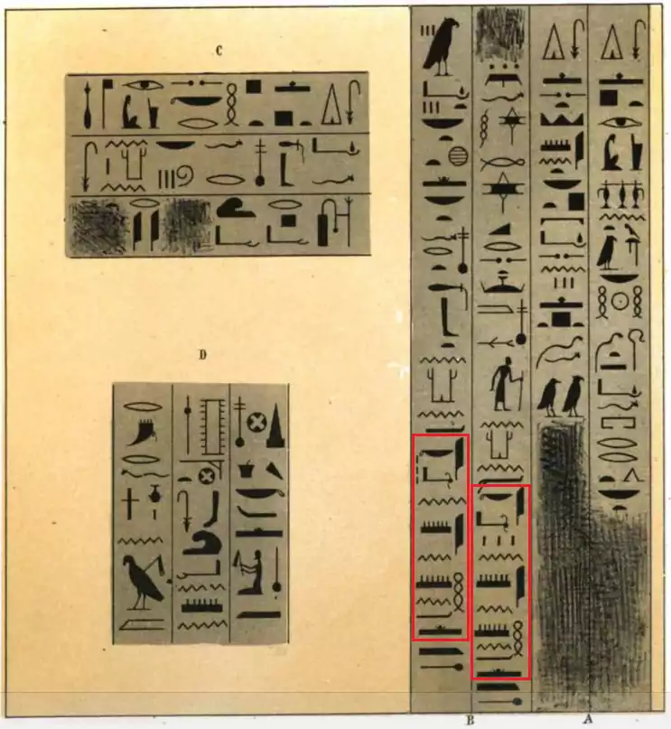
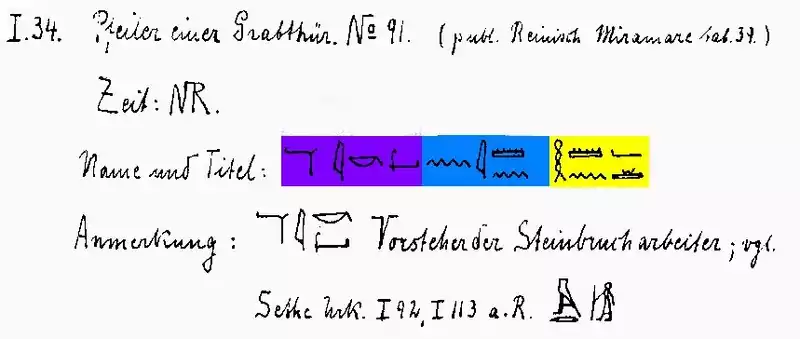

In the Bible, who is Haman and where does he live?
What did Egyptologists discover in ancient hieroglyphic inscriptions about a person named Haman?


The Quran says Pharaoh told Haman: "Bake clay and build me a tower." What does Haman's Egyptian title reveal about this command?